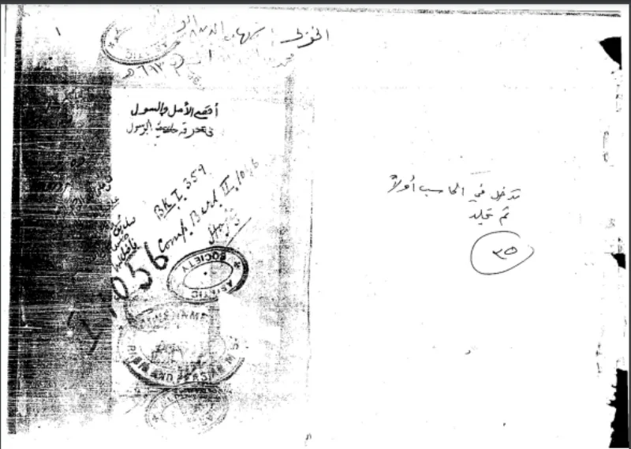
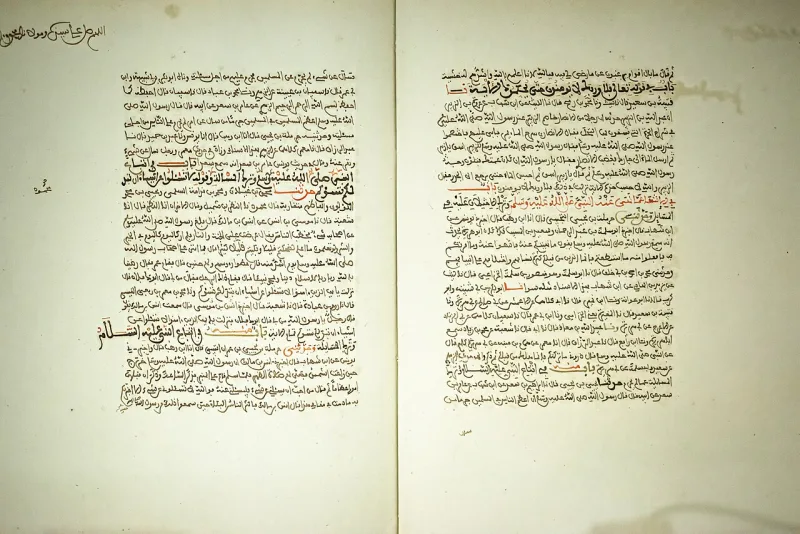
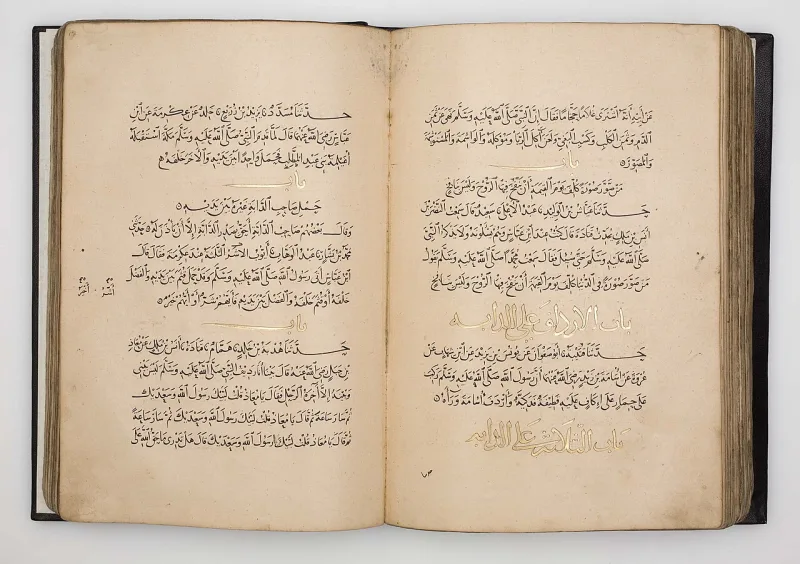

The Muslim answer holds up. Do not lead with this one.
Some modern Muslim writers argue that Aisha was really 17 to 19. Two arguments are given.
The age-nine report comes through one narrator, Hisham ibn Urwa, whose memory is said to have failed in Iraq. And her sister Asma was ten years older and died at 100 in 73 AH, which allows a later calculation.
Muslim scholarship itself. The age reports are not solitary.
They come from Aisha in the first person, through several independent chains — al-Aswad and other students of hers, besides Hisham's line, in both Bukhari and Muslim. So doubting Hisham's late-life memory removes nothing.
It rests on a report by Ibn Abi al-Zinad, who was born decades after Asma died. That is far weaker evidence than the sahih chains it is meant to overturn.
The Yaqeen Institute and ICRAA, both mainstream Muslim bodies. Both defend age nine and call the 19 thesis revisionism.
Yaqeen's paper is titled The Age of Aisha: Rejecting Historical Revisionism and Modernist Presumptions.
Do not argue the chains yourself. Hand your friend his own institutions.
A defence that orthodoxy refuses is worth noticing, and the reason it refuses matters. To accept it would mean sahih, multiply attested reports can be dropped when they are uncomfortable — which would take the whole hadith canon with them.
Pair this with the Aisha case; it is that case's shield.
"Yaqeen Institute rejects that argument themselves. Have you read their paper on it?"



The age reports come through several chains, and Yaqeen itself defends age nine.
The correction comes from Muslim scholarship itself. The age reports are not solitary. They come from Aisha in the first person, through several chains that do not depend on each other. Those include al-Aswad and other students of hers, besides Hisham's line, in both Bukhari and Muslim. So doubting Hisham's late-life memory removes nothing.
The Asma calculation rests on a report by Ibn Abi al-Zinad. He was born decades after Asma died. That is far weaker than the sahih chains it is meant to overturn. The Yaqeen Institute and ICRAA are both mainstream Muslim bodies. Both defend age nine, and both call the 19 thesis revisionism.
Do not argue the chains: hand your friend his own institutions instead.
This entry exists because you will hear the claim. It travels widely in dawah, even though Islam's own hadith scholarship rejects it.
The move that settles it is not to argue the chains yourself. Hand your friend his own institutions. Yaqeen's paper is literally titled The Age of Aisha: Rejecting Historical Revisionism and Modernist Presumptions.
A defence that orthodoxy itself refuses is worth noticing, and the reason for the refusal matters. To accept it would mean that sahih reports, carried by many chains, can be dropped when they are uncomfortable. That would take down the hadith canon it is trying to protect. Pair this with the Aisha-age case. It is that case's shield.